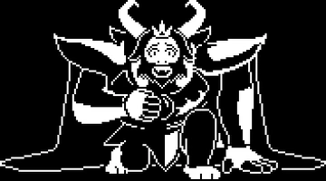
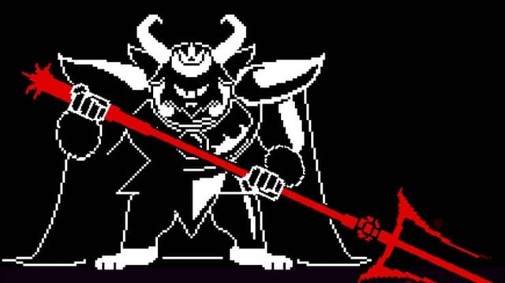

HOME/ |
FRISK/ |
BOSSES/ |
AÇÕES/ |
CRIADOR |

ASGORE
Asgore Dreemurr é o rei dos monstros e governa o Subsolo após a guerra contra os humanos. Embora seja bondoso e pacífico, ele prometeu coletar sete almas humanas para destruir a barreira que aprisiona seu povo. No confronto final, Frisk descobre que Asgore age por dever, e não por ódio, tornando-se um dos personagens mais trágicos de Undertale.
TEMA DA BATALHA
VOLTAR


História detalhada
Asgore Dreemurr é o rei dos monstros e um dos governantes mais respeitados do Subsolo. Antes dos acontecimentos de Undertale, ele vivia em paz ao lado de sua esposa Toriel e de seu filho Asriel. Conhecido por sua gentileza, paciência e carinho por seu povo, Asgore sempre desejou que monstros e humanos pudessem conviver em harmonia. Sua vida, porém, mudou completamente após uma grande tragédia envolvendo sua família.
Depois que a humana Chara caiu no Subsolo, ela foi adotada pela família Dreemurr e passou a viver como irmã de Asriel. Algum tempo depois, Chara morreu devido ao seu plano envolvendo flores douradas envenenadas. Para realizar seu último desejo, Asriel absorveu sua alma e atravessou a barreira levando seu corpo até a superfície. Os humanos acreditaram que Asriel havia assassinado a criança e o atacaram violentamente. Sem revidar, Asriel retornou ao Subsolo gravemente ferido e morreu pouco depois.
Consumido pela tristeza e pela raiva, Asgore declarou guerra à humanidade. Em um momento de desespero, ele prometeu que qualquer humano que caísse no Subsolo seria morto para que sua alma fosse coletada. Seu objetivo era reunir sete almas humanas, destruir a barreira mágica e libertar todos os monstros. Essa decisão fez Toriel abandonar o castelo, pois ela nunca concordou com a ideia de sacrificar crianças inocentes.
Quando Frisk finalmente chega ao castelo, Asgore demonstra ser muito diferente da imagem de um rei cruel. Antes da batalha, ele conversa calmamente com o humano, oferece uma última chance para voltar e até destrói o botão de Misericórdia, acreditando que a luta é inevitável. Durante o confronto, fica evidente que ele não sente prazer em lutar e apenas continua porque acredita que não pode decepcionar todo o povo que deposita suas esperanças nele.
Dependendo das escolhas do jogador, Asgore pode ser poupado ou morto. Na Rota Pacifista Verdadeira, a verdade sobre o passado vem à tona, a barreira é destruída e os monstros finalmente conquistam a liberdade. Apesar dos erros que cometeu, Asgore continua sendo lembrado como um rei bondoso que tomou decisões terríveis por causa da dor da perda de sua família e do desejo de oferecer um futuro melhor ao seu povo.